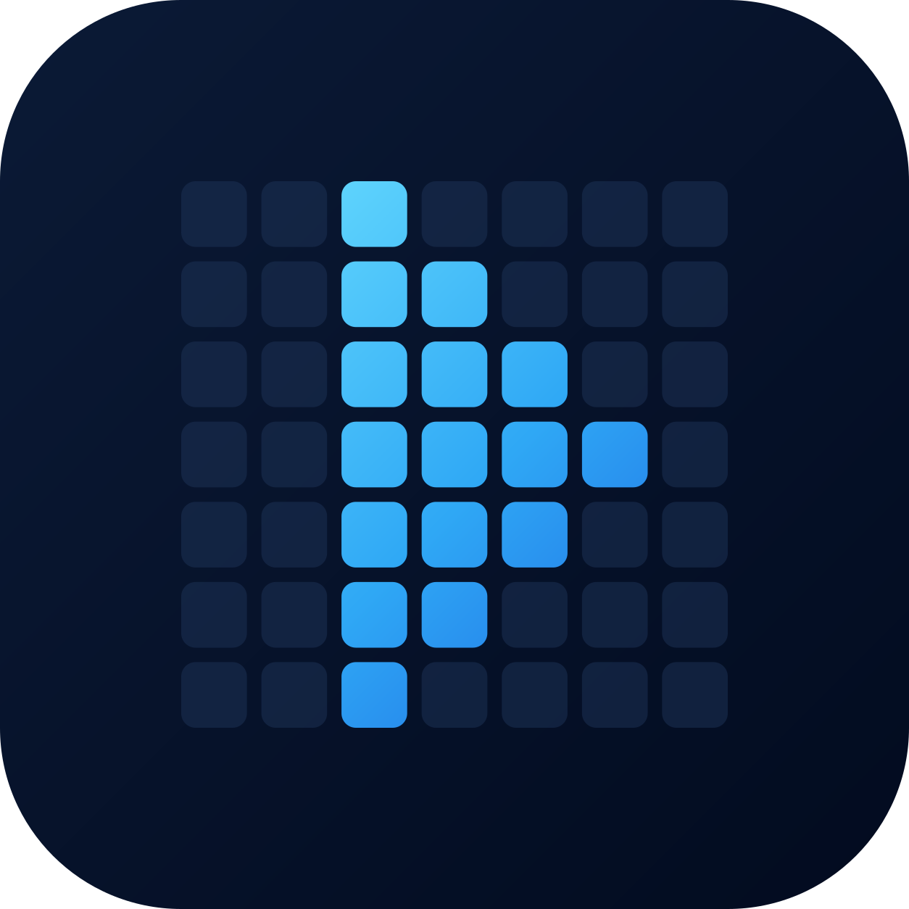

Tessel
★
Recently Played
Quick access to past media
URL
Open Network Stream
HTTP · HLS · DASH · RTSP · RTMP
USB
Browse USB Drive
Local files on connected storage
SMB
Browse SMB Share
Network files over your LAN
⚙
Settings
Preferences & TV info
Open Network Stream
Stream URL or file path
Play
📲 Get URL from device
Cancel
Or try a sample stream
Oceans (MP4, short)
HLS test (Mux)
Big Buck Bunny (MP4)
Apple BipBop (HLS, 16:9)
DASH test (Akamai)
My Wowza RTSP
FAA RTSP (public)
Paste a URL from your phone, tablet or laptop — pair once under
Settings
.
USB Drive
/
Loading…
Opening stream…
!
Playback error
Back to Home
00:00
00:00
⏮
⏪
▶
⏩
⏭
CC
1×
Fit
↻
🔀
⏹
Tracks
Audio
Subtitle
Close
Settings
Enjoying Tessel?
Scan the QR with your phone to support development on Ko-fi.
App language
Preferred audio language
Auto
Preferred subtitle language
Off
Repeat mode
Off
Auto-play next file
Off
Resume playback
Ask
Shuffle playlist
Off
Video aspect ratio
Fit screen (keep black bars)
Subtitle appearance
Subtitle size
Medium
Subtitle font
Sans-serif
Subtitle position
Bottom
Subtitle background
None
Cast from another device
Cast a link to your TV
Scan the QR code to pair.
Or go to
…
and enter code
…
.
SMB network share
▸
Server (IP/host)
Port
Share
Guest (no login)
Off
Username
Password
Domain (optional)
Save SMB server
Transcode server
▸
Status
Not paired
Find server on my network
Server address
Connect to this address
Surround sound
—
Smart routing (play compatible files directly)
Off
Play USB files through the server
Off
Get share settings from the server
Send my share settings to the server
Pair with a code (needs internet)
Remove transcode server
Debug logging
▸
Send debug logs
Off
Listener IP
Listener port
Save debug settings
TV Information
Loading…
Pick a value
Cancel